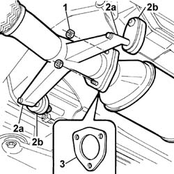

1076B34 Front catalytic converter attachment SEAL - Replace
- Path
- Procedures > 10 ENGINE > 1076 EXHAUST PIPES AND SILENCERS > 1076B EXHAUST PIPES AND SILENCERS > 1076B34 Front catalytic converter attachment SEAL - Replace
- Kind
- repair procedure (removal / refitting; the operation number is the code)
- Applies to
- engines: 2.4 JTD 10V; all production periods
- Interactive page
- https://sloeber94.github.io/elrnDB-lThss/en/#/76038
Applies to: all engines; all production periods
 Removing
Removing
 Refitting
Refitting- Position the vehicle on a lift.
1. Undo the bolts fixing the pipe to the catalytic converter.
2. Release the pins (2a) from the pipe rubber mountings (2b).
3. Remove the seal from its housing.

Applies to: all engines; all production periods
Refitting
Removing- Position the seal in the special housing in the catalyzer.
- Secure the pins to the rubber mountings.
- Tighten the bolts fixing the pipe to the catalytic converter.
 | Value - daNm | Fastening | Component | Ø |
|---|---|---|---|---|
. | (catalytic converter) 2.8 | Bolts | EXHAUST PIPE TO ENGINE | M8 |
- Remove the vehicle from the lift.